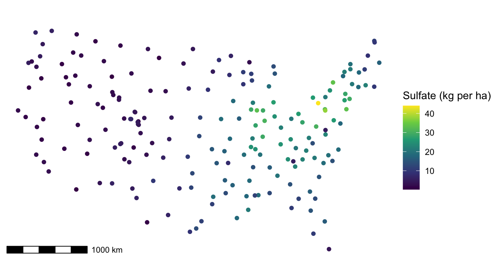
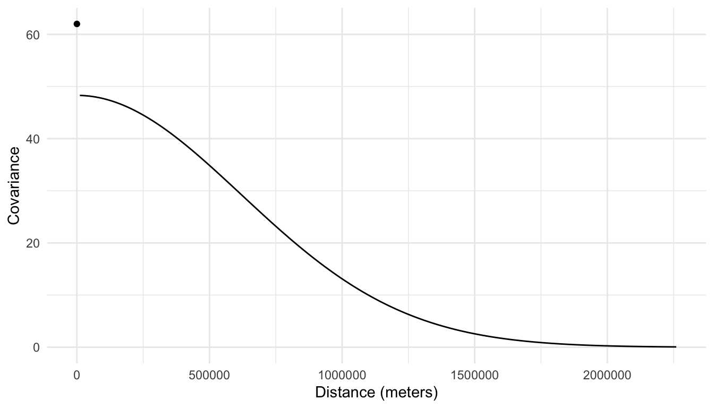
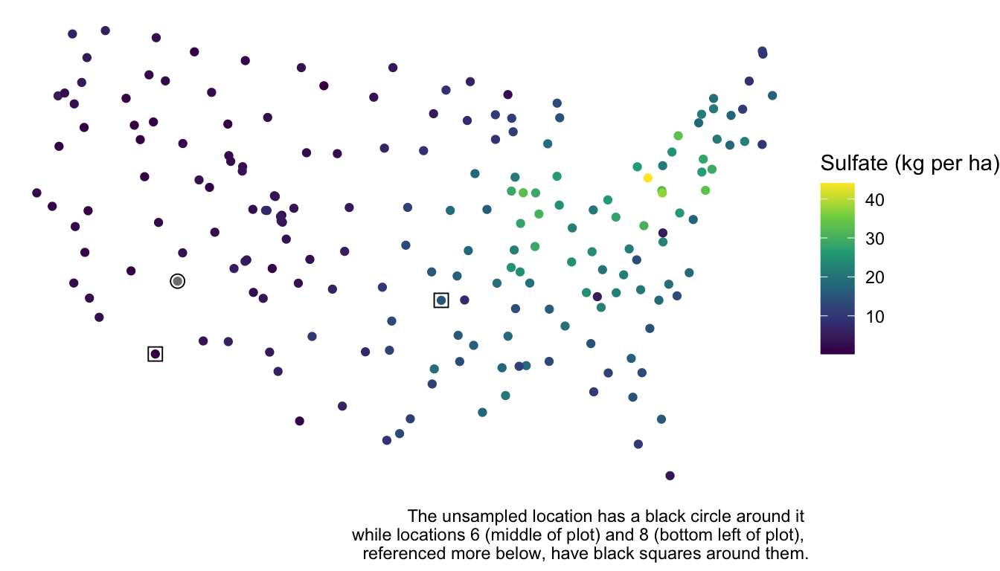
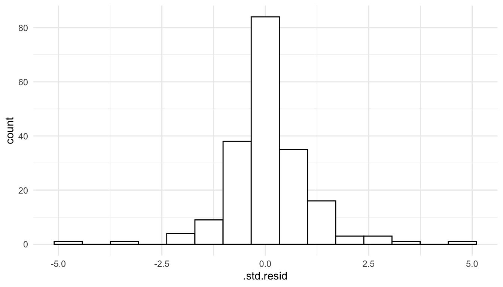

library(spmodel)
library(sf)
library(tidyverse)
theme_set(theme_minimal()) ## set the default theme5 Prediction
Goals
- Construct a prediction for the response variable at an unobserved spatial location.
- Explain some of the intuition behind how spatial information is used to construct predictions.
- Construct a prediction interval for the response variable at an unobserved spatial location.
In this section, we shift focus to prediction for the response variable at a spatial location where the response variable was not observed. Throughout, we will use the spmodel, sf, and tidyverse packages:
5.1 Data (Re)-Introduction
Now that we have some experience with more formal spatial modeling, we will go back and use sulfate data again to fit a formal spatial linear model. Recall that we had constructed a plot of the response variable, sulfate concentration, at the measured spatial locations (note that to recreate the plot, the ggspatial package is needed to reconstruct the scale bar):
ggplot(data = sulfate, aes(colour = sulfate)) +
geom_sf() +
scale_colour_viridis_c() +
theme_void() +
labs(colour = "Sulfate (kg per ha)") +
ggspatial::annotation_scale()
In the plot, we observe some spatial correlation in the sulfate values. There are no candidate predictors to use, so we would expect to see a lot of evidence of spatial correlation in a fitted model. In the model below, we specify a "gaussian" covariance function with splm():
mod_sulf <- splm(sulfate ~ 1, data = sulfate, spcov_type = "gaussian")
tidy(mod_sulf)
## # A tibble: 1 × 5
## term estimate std.error statistic p.value
## <chr> <dbl> <dbl> <dbl> <dbl>
## 1 (Intercept) 8.22 2.54 3.24 0.00120
tidy(mod_sulf, effects = "spcov")
## # A tibble: 3 × 3
## term estimate is_known
## <chr> <dbl> <lgl>
## 1 de 48.3 FALSE
## 2 ie 13.7 FALSE
## 3 range 875795. FALSETherefore,
\[ \widehat{\text{cov}}(Y_i, Y_j) = \begin{cases} 13.7 + 48.3 e^{-\left(\frac{h_{ij}}{875795}\right)^2}, & h_{ij} = 0\\ 48.3 e^{-\left(\frac{h_{ij}}{875795}\right)^2}, & h_{ij} > 0 \end{cases}, \]
where \(Y_i\) is the random variable for sulfate concentration at location \(i\), \(Y_j\) is the random variable for sulfate concentration at location \(j\), and \(h_{ij}\) is the distance between locations \(i\) and \(j\). And, we can see from the following plot that there is a large amount of covariance between sulfate concentration at spatial locations that are close together.

5.2 Prediction
We should be able to use the fact that sulfate concentrations are spatially correlated to produce a more precise prediction for sulfate at an unsampled location than if we ignored the spatial nature of the data entirely.
For example, suppose that the sulfate value in the seventh row of the sulfate data set was actually missing:
sulfate_na <- sulfate |> mutate(sulfate = if_else(row_number() == 7,
true = NA,
false = sulfate))We want to predict the sulfate concentration at this spatial location:
ggplot(data = sulfate_na, aes(colour = sulfate)) +
geom_sf() +
scale_colour_viridis_c() +
theme_void() +
labs(colour = "Sulfate (kg per ha)") +
geom_sf(data = sulfate_na |> slice(7), shape = 21, size = 3, colour = "black") +
geom_sf(data = sulfate_na |> slice(6, 8), shape = 0, size = 3, colour = "black") +
labs(caption = "The unsampled location has a black circle around it \n while locations 6 (middle of plot) and 8 (bottom left of plot), \n referenced more below, have black squares around them.")
A naive prediction of the sulfate concentration that completely ignores space would be the sample mean:
sulfate_na |>
summarise(naive_pred = mean(sulfate, na.rm = TRUE)) |>
pull(naive_pred)
## [1] 12.23997However, we can clearly see from the plot that the location is near a lot of other points with low sulfate concentration. We should be able to use this “extra” spatial information to obtain a more precise prediction for sulfate concentration.
Prediction in the spatial context is often called “kriging.” To obtain the sulfate prediction at the unsampled location, we first re-fit the spatial model without the sulfate value at the seventh spatial location.
mod_sulf_na <- splm(sulfate ~ 1, data = sulfate_na, spcov_type = "gaussian")
tidy(mod_sulf_na)
## # A tibble: 1 × 5
## term estimate std.error statistic p.value
## <chr> <dbl> <dbl> <dbl> <dbl>
## 1 (Intercept) 8.21 2.54 3.23 0.00126To obtain the predicted sulfate concentration at the unobserved spatial location, we can use the predict() function:
predict(mod_sulf_na)
## 7
## 2.985773This returns the predicted sulfate concentration for any row in the data set that had a missing NA value for sulfate. We obtain a prediction of about 3 kg per ha, which makes some sense when looking at the plot of the data. But, where does this value come from exactly? While the kriging equations are fairly complex for the scope of these materials (which are meant to be introductory), we can gain a little bit of intuition with how spatial information is incorporated into the prediction. With an estimated intercept value of \(\hat{\beta}_0 = 8.21\), the predicted sulfate concentration at the seventh spatial location can be calculated as:
\[ \dot{y}_7 = 8.21 + [w_1 (y_1 - 8.21) + \ldots + w_6(y_6 - 8.21) + w_8(y_8 - 8.21) + \ldots w_{197}(y_{197} - 8.21)], \]
where \(\dot{y}_7\) is the predicted sulfate at location \(7\) and the \(w_i\)’s are weights applied to the sulfate values found at each of the observed spatial locations minus the overall mean. In general, a \(w_i\) is larger if the location \(i\) is closer to location \(7\), implying that the spatial covariance between the two locations is fairly high. Examining the sulfate data again, we would expect \(w_1, w_2, \ldots w_6\) to all be relatively small, as these spatial locations are far from location \(7\) while \(w_8, w_9, w_{10}\) should all be relatively large, as these spatial locations are much closer to location \(7\). The larger a \(w_i\), the more “weight” observation \(i\) has in determining how much above or below the mean (of 8.21) our prediction should be. For example, because location \(8\) is much closer to location \(7\) than location \(6\) is, \(w_8\) is \(0.087\) while \(w_6\) is only \(0.00456\). So, the eighth location adjusts the prediction down by \(0.087 (0.425 - 8.21) = -0.677\) kg per ha while the sixth location adjusts the prediction up by only \(0.00456 (15.358 - 8.21) = 0.033\) kg per ha.
While it is not possible to introduce the equations that form the \(w_i\) without introducing matrix notation for the model, any interested reader with a little background on matrices can examine https://usepa.github.io/spmodel/articles/technical.html#sec:predict-lm for the kriging equations.
5.3 Prediction Intervals
In addition to obtaining a predicted sulfate value at an unobserved spatial location, we can also obtain a confidence interval for the mean sulfate at this location and a prediction interval for a range of reasonable sulfate values at this spatial location. Both of these intervals have very similar interpretations to how they are interpreted in a regression model with independent errors.
First, we obtain a 95% confidence interval for the mean sulfate with:
predict(mod_sulf_na, interval = "confidence", level = 0.95)
## fit lwr upr
## 7 8.205691 3.220043 13.19134Note that the interval is centered around the estimated mean of 8.21, not around the prediction of 2.99. So, we are 95% confident that the mean sulfate concentration is between 3.22 kg per ha and 13.19 kg per ha.
We are usually more interested in a prediction interval. We can obtain a 95% prediction interval for a plausible range of sulfate values at the unobserved spatial location with:
predict(mod_sulf_na, interval = "prediction", level = 0.95)
## fit lwr upr
## 7 2.985773 -4.961117 10.93266We are 95% confident that the sulfate concentration at that particular spatial location is actually between -4.96 kg per ha and 10.93 kg per ha. In this example, we have a negative lower bound, which can occur when we use the normal distribution, having support from \(-\infty\) to \(\infty\) as our model for the random errors. We should, however, check to see if there is any violation in the normality assumption: recall from Chapter 4 that a mild violation in normality is okay for most types of inference if we have a fairly large sample size, but prediction intervals are heavily reliant on the normality assumption.
aug_sulf_na <- augment(mod_sulf_na)
ggplot(data = aug_sulf_na, aes(x = .std.resid)) +
geom_histogram(colour = "black", fill = "white", bins = 15)
We see that the normality assumption seems reasonable, as the standardized residuals appear approximately normally distributed, so interpreting a prediction interval should be okay in this context.
5.4 Locations in Different Data Frames
In the code above, the sulfate concentration that we wished to predict was at a spatial location in the sulfate_na data frame. But, sometimes the spatial location (or spatial locations) that we want to predict at are in a different data frame. For example, suppose that the first seven rows in the sulfate data frame have missing sulfate values and are stored in their own data frame:
sulfate_all_na <- sulfate |> slice(1:7) |> select(-sulfate)A data frame for the other 190 locations can be made with:
sulfate_complete <- sulfate |> slice(-(1:7))If we want to predict the sulfate concentration at the locations in sulfate_all_na, we can use the newdata argument to augment(), assuming that newdata has the same structure as the data used to fit the model.
mod_sulf_more_na <- splm(sulfate ~ 1, data = sulfate_complete,
spcov_type = "gaussian")
augment(mod_sulf_more_na, newdata = sulfate_all_na)
## Simple feature collection with 7 features and 1 field
## Geometry type: POINT
## Dimension: XY
## Bounding box: xmin: -1437776 ymin: 1080571 xmax: 914593.6 ymax: 1568022
## Projected CRS: NAD83 / Conus Albers
## # A tibble: 7 × 2
## .fitted geometry
## * <dbl> <POINT [m]>
## 1 15.7 (817738.8 1080571)
## 2 16.8 (914593.6 1295545)
## 3 16.7 (359574.1 1178228)
## 4 16.3 (265331.9 1239089)
## 5 17.9 (304528.8 1453636)
## 6 16.0 (162932.8 1451625)
## # ℹ 1 more rowWe obtain predictions for sulfate concentration at these 7 locations based on the model fit with the sulfate_complete data in the .fitted column of the output. We can also obtain prediction intervals with an additional interval argument:
augment(mod_sulf_more_na, newdata = sulfate_all_na, interval = "prediction",
level = 0.95)
## Simple feature collection with 7 features and 3 fields
## Geometry type: POINT
## Dimension: XY
## Bounding box: xmin: -1437776 ymin: 1080571 xmax: 914593.6 ymax: 1568022
## Projected CRS: NAD83 / Conus Albers
## # A tibble: 7 × 4
## .fitted .lower .upper geometry
## * <dbl> <dbl> <dbl> <POINT [m]>
## 1 15.7 8.04 23.4 (817738.8 1080571)
## 2 16.8 9.18 24.4 (914593.6 1295545)
## 3 16.7 9.07 24.4 (359574.1 1178228)
## 4 16.3 8.60 24.0 (265331.9 1239089)
## 5 17.9 10.2 25.5 (304528.8 1453636)
## 6 16.0 8.24 23.7 (162932.8 1451625)
## # ℹ 1 more rowUsing augment() instead of predict() is particularly useful if there are a lot of spatial locations that you would like to predict at and if you plan on constructing any plots of the predictions.